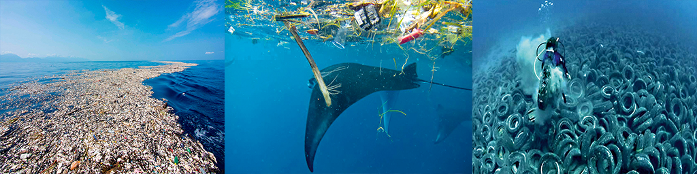

Quando um objeto não tiver mais valor para você, é preciso destiná-lo corretamente. Antes de mais nada, pense que ele pode ser interessante para outra pessoa. Veja se é melhor fazer uma doação, troca ou revenda desse produto. Use a criatividade para estender a vida útil desse objeto ao máximo, fazendo valer os recursos naturais e humanos que foram consumidos em sua produção.
Se todas essas alternativas acima foram excluídas, faça a destinação correta desse material plástico para a reciclagem. Veja as nossas dicas a seguir:
– A divisão básica dos resíduos pede duas latas, uma de “lixo seco” e outra de “lixo úmido”. No “lixo úmido” vai todo o material orgânico, que tem origem em seres vivos. Exemplos: restos de alimentos, papéis engordurados e sujos, madeira, poda de plantas e dejetos humanos ou animais. Filtros de café e sachês de chá, que são úmidos, vão na mesma lata dos materiais orgânicos. Esse “lixo úmido” é o “lixo comum”, descartado normalmente. No “lixo seco”, vai aquele material inorgânico, de difícil decomposição, como papéis, embalagens, metais, plásticos e vidro. É neste “lixo seco” que você terá materiais diversos que poderão ser reciclados.
– Separar materiais de reciclagem por tipo (metais, vidro, papel e plástico) facilita a vida dos catadores e dos funcionários dos postos de entrega voluntária. Caso não seja possível fazer essa separação de materiais, não deixe de encaminhá-los para a reciclagem, mesmo que tudo esteja junto – o importante é que esse material chegue aos pontos de coleta.
– De preferência, remova o excesso de sujeira do material reciclado. Limpe um pote de iogurte, por exemplo, com um papel usado ou água de reuso, se possível. Seque esse material, para evitar que ele molhe os papéis que serão destinados à reciclagem. Essa limpeza ajuda a evitar que o material reciclável emita um mau cheiro nos pontos de reciclagem e atraia insetos, colocando em risco a saúde das pessoas – em especial dos profissionais de reciclagem.
– Procure esvaziar garrafas e recipientes de plástico, vidro ou metal para enviá-los à reciclagem. Não coloque papéis, bitucas de cigarro ou outros objetos dentro deles. Isso pode inviabilizar a separação e o reaproveitamento do material.
– Depois da separação do material reciclável, é hora de destiná-lo à reciclagem. Informe-se sobre o processo de coleta seletiva na região. Caso a prefeitura não faça essa coleta porta a porta na sua região, procure um posto de entrega voluntária ou uma cooperativa de catadores. Conheça a ferramenta da eCycle, parceiro do Instituto Akatu, que indica quais são os pontos de entrega mais próximos do seu endereço. (http://www.ecycle.com.br/postos/reciclagem.php)
– Remédios não devem ser jogados no vaso sanitário ou no lixo, pois podem contaminar o solo e a água, além de representar um risco para animais que fuçam os lixos. Descarte os medicamentos (e suas embalagens, inclusive cartelas plásticas) em postos de coleta especializados, geralmente encontrados em farmácias e postos de saúde, para que a destinação seja adequada. (http://www.ecycle.com.br/postos/reciclagem.php)